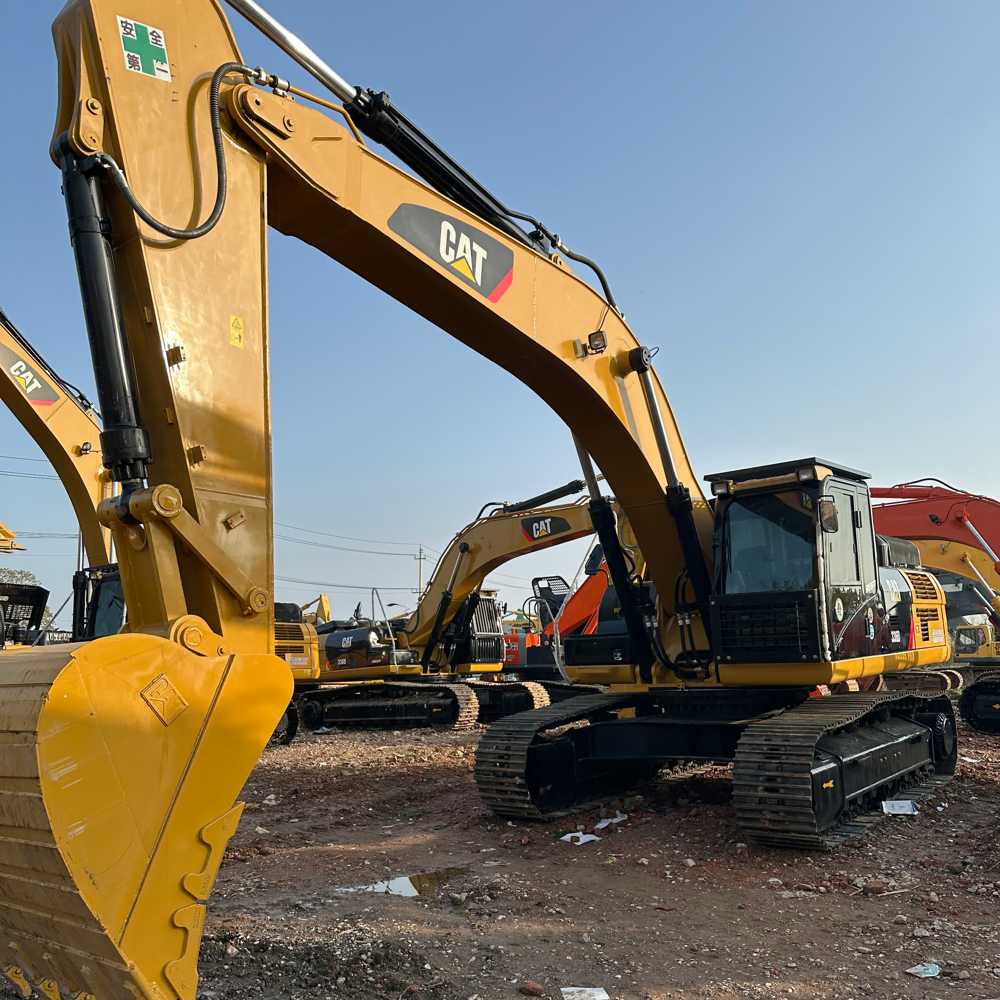

Refurbished Caterpillar Cat 336 Excavator
The Caterpillar Cat 336 Excavator is renowned for its power, efficiency, and versatility in the world of heavy equipment. As one of Caterpillar's premier models, the Cat 336 is designed for large-scale construction, demolition, and mining operations. When refurbished, it offers an excellent opportunity to acquire a high-performance machine at a lower cost without compromising on quality or reliability.
Honestly, it's almost impossible to buy a brand new excavator from China. They either don't exist or are made in China. If a Chinese seller tells you their Caterpillar/Komatsu/Volvo/Kobelco/Hitachi is brand new, they're lying. Therefore, a refurbished excavator is your best bet.

Here are the detailed specifications for a refurbished Caterpillar Cat 336 excavator, structured for technical documentation and consistent with your annotated library:
Operating Weight and Dimensions
- Operating Weight: 36,000–37,500 kg
- Transport Length: ~11.1 meters (36 ft 5 in)
- Transport Width: ~3.2 meters (10 ft 6 in)
- Transport Height: ~3.3 meters (10 ft 10 in)
- Tail Swing Radius: ~3.7 meters
- Track Width: 600–800 mm standard
- Counterweight: ~7.1 metric tons
Engine and Powertrain
- Engine Model: Cat C7.1 (Tier 4 Final / EU Stage V compliant in newer units)
- Rated Power Output: ~234 kW (314 hp) @ 1,800 rpm
- Fuel Tank Capacity: ~620 liters
- Travel Speed: 3.5–5.0 km/h
- Swing Speed: ~9.0 rpm
- Altitude Capability: Up to 3,000 m without derate
Hydraulic System
- Main Pump Type: Electro-hydraulic, load-sensing piston pumps
- Flow Rate: ~2 × 360–380 L/min
- System Pressure: Up to 35 MPa
- Hydraulic Oil Capacity: ~550 liters
- Smart Modes:
- Auto Dig Boost
- Heavy Lift Mode
- Auto Hydraulic Warm-Up
Performance Metrics
- Bucket Capacity: 1.5–2.5 m³ (SAE heaped)
- Max Digging Depth: ~7.4–7.6 meters
- Max Reach (Horizontal): ~11.0–11.5 meters
- Max Dump Height: ~7.2–7.5 meters
- Bucket Digging Force: ~210–220 kN
- Arm Digging Force: ~160–170 kN
Cab and Operator Features
- Cab Type: ROPS/FOPS certified
- Display: High-resolution touchscreen with customizable interface
- Controls: Electro-hydraulic joysticks with programmable response
- Comfort: Heated air-suspension seat, climate control, low-noise cab
- Visibility: Panoramic glass, rear and side cameras, LED lighting
Smart Features and Efficiency
- Technology Suite:
- Cat Grade with 2D
- Grade Assist
- Payload Measurement
- Work Tool Recognition
- Operating Modes: Power, Smart, ECO
- Emissions Control: DOC + DPF + SCR (no operator input required)
- Ambient Capability:
- High temp: up to 52°C
- Cold start: down to –18°C
Attachments Compatibility
- Standard Bucket: 1.5–2.5 m³
- Optional Tools: Hydraulic breaker, demolition shear, ripper, compactor
- Quick Coupler: Hydraulic (Cat Pin Grabber or Smart Coupler)
Refurbishment Scope
Refurbished Cat 336 units typically include:
- Engine Overhaul: Turbocharger, injectors, cooling system, emissions service
- Hydraulic Restoration: Pump recalibration, valve block testing, hose replacement
- Electrical Diagnostics: Monitor, sensors, wiring harness, telematics
- Cab Reconditioning: Seat, joysticks, HVAC, touchscreen UI, repainting
- Structural Repairs: Boom/bucket welding, bushing replacement, undercarriage rebuild
Overview of the Caterpillar Cat 336 Excavator
The Cat 336 is a heavy-duty hydraulic excavator built for large projects requiring high lifting capacity, digging power, and reliability. Whether for digging deep foundations, material handling, or demolition work, the Cat 336 provides the necessary power and reach to tackle demanding tasks efficiently. Its robust construction and advanced hydraulic systems make it ideal for a variety of industries, including construction, mining, and waste management.
Key Specifications of the Caterpillar Cat 336
-
Operating Weight: Approximately 35,000 - 37,500 kg (77,160 - 82,670 lbs)
-
Engine Power: 230 kW (309 hp)
-
Max Digging Depth: Up to 6.6 meters (21.7 feet)
-
Max Reach: About 11.5 meters (37.7 feet)
-
Bucket Capacity: Typically 1.6 to 2.5 cubic meters (56.5 to 88.4 cubic feet)
-
Fuel Tank Capacity: Approximately 530 liters (140 gallons)
-
Travel Speed: Maximum speed of 5.3 km/h (3.3 mph)
The Cat 336 combines powerful hydraulics with a strong engine, offering great flexibility in a wide range of applications.
Performance and Efficiency
The Caterpillar Cat 336 Excavator is designed for optimal productivity, fuel efficiency, and low operating costs. With its powerful engine, responsive hydraulics, and durable undercarriage, this machine performs exceptionally well in tough environments, even with heavy workloads.
Key Performance Features:
-
Impressive Digging and Lifting Power: The Cat 336 features a highly efficient hydraulic system that enables superior digging and lifting performance, ideal for large excavation jobs or demolition tasks. Its powerful digging force ensures quick and reliable material handling, while the machine’s heavy lifting capabilities make it ideal for handling large loads.
-
Fuel Efficiency: Caterpillar has integrated advanced fuel-saving technologies in the Cat 336 to reduce fuel consumption while maximizing output. The machine's efficient powertrain ensures long operational hours with less fuel usage, making it a cost-effective solution for long-term operations.
-
Advanced Hydraulics: The Cat 336 is equipped with a high-flow hydraulic system that provides maximum efficiency when lifting, digging, or lifting heavy materials. With precise control over boom, stick, and bucket movements, operators can work with greater precision and less effort, increasing productivity and reducing wear.
-
Low Emissions: The Cat 336 meets the latest environmental standards by utilizing an efficient engine that reduces emissions while maintaining optimal power. This is especially beneficial for projects in urban environments where emission controls are stricter.
Durability and Construction
The Caterpillar Cat 336 Excavator is built for tough and demanding jobsites, with high-strength materials and a rugged construction that ensures longevity and durability.
Key Durability Features:
-
Heavy-Duty Undercarriage: The undercarriage is designed to withstand rough terrain and tough working conditions. Featuring reinforced tracks, rollers, and sprockets, the Cat 336 ensures durability and minimizes downtime associated with track issues.
-
Robust Boom and Stick: The boom and stick are constructed from high-strength steel to handle heavy-duty lifting and digging tasks. These components are designed to resist bending or damage under challenging conditions, contributing to the overall longevity of the machine.
-
Wear Protection: The Cat 336 comes with wear-resistant parts, such as hardened bucket teeth and durable seals, which protect critical components from excessive wear, dirt, and debris, extending the machine's operational lifespan.
Operator Comfort and Safety
Caterpillar puts a strong emphasis on operator comfort and safety in the design of the Cat 336. The machine features a spacious, ergonomic cabin that allows operators to work for extended periods without fatigue while maintaining excellent visibility of the work area.
Key Comfort and Safety Features:
-
Ergonomic Cabin: The operator's cabin of the Cat 336 is designed with comfort in mind, featuring an adjustable seat, intuitive controls, and ample legroom. The user-friendly interface reduces operator fatigue and enhances productivity.
-
Advanced Climate Control: The cabin is equipped with a fully functional climate control system, ensuring a comfortable working environment in both hot and cold weather conditions.
-
Excellent Visibility: The Cat 336 provides excellent visibility with large windows, strategically placed mirrors, and camera systems, helping operators minimize blind spots and increase safety on the jobsite.
-
Safety Systems: The Cat 336 is designed with a variety of safety features, including Roll-Over Protective Structures (ROPS), Falling Object Protective Structures (FOPS), and an advanced hydraulic lock-out system that prevents accidental movements, ensuring operator safety in dangerous environments.
Versatility with Attachments
One of the standout features of the Cat 336 is its versatility. This excavator can be easily equipped with a wide range of attachments to perform various tasks, from digging to demolition and lifting.
Common Attachments for the Cat 336:
-
Buckets: Available in various sizes and types, including general-purpose, heavy-duty, and rock buckets for a variety of material-handling tasks.
-
Hydraulic Hammers: Used for breaking up hard surfaces, such as concrete, asphalt, or rock.
-
Augers: Ideal for drilling large holes for foundations, posts, or utility installations.
-
Grapples: Used for handling large materials, such as debris, wood, and scrap metal.
The ability to quickly swap attachments ensures the Cat 336 can perform multiple roles on a job site, improving overall efficiency.
Advantages of Purchasing a Refurbished Caterpillar Cat 336 Excavator
A refurbished Caterpillar Cat 336 Excavator offers several advantages, especially for businesses looking to reduce upfront costs while still acquiring a machine that delivers excellent performance.
Benefits of a Refurbished Cat 336:
-
Cost-Effective: Refurbished Cat 336 excavators are significantly more affordable than brand-new models. For construction companies looking to minimize their equipment investment while maintaining high operational standards, refurbished models are an excellent option.
-
Thorough Inspection and Repair: Reputable sellers of refurbished Cat 336 excavators conduct rigorous inspections and repairs, replacing worn-out components and ensuring the machine operates at peak performance.
-
Warranty Options: Many refurbished Cat 336 excavators come with warranties, providing peace of mind to the buyer and protection against future repair costs.
-
Environmental Impact: Purchasing a refurbished Cat 336 is an eco-friendly choice. Extending the life of heavy equipment reduces the need for new manufacturing, conserving resources and reducing environmental impact.
Maintenance Tips for the Caterpillar Cat 336 Excavator
To ensure the Cat 336 continues to operate at optimal levels, regular maintenance is key. Here are some maintenance tips to help maximize the lifespan and performance of your Cat 336.
Recommended Maintenance Practices:
-
Hydraulic System: Regularly inspect and change hydraulic fluid and filters to maintain hydraulic efficiency. Check hoses for leaks or wear and replace them as necessary.
-
Engine Maintenance: Ensure engine oil and coolant are changed at the recommended intervals. Regularly check air filters and fuel systems for blockages or wear.
-
Undercarriage: Inspect tracks, rollers, and sprockets regularly for wear. Keep the undercarriage clean and lubricated to prevent premature damage.
-
Cooling System: Check the radiator, fans, and cooling lines to prevent overheating, especially during hot weather or long work cycles.
Conclusion
The Caterpillar Cat 336 Excavator is a powerful, efficient, and durable machine designed for large-scale projects. Whether it's digging, lifting, or material handling, the Cat 336 excels in providing top-tier performance, versatility, and operator safety. Opting for a refurbished Cat 336 offers an affordable way to acquire a machine that delivers reliable performance without the high costs of a new unit. With the proper maintenance and care, a refurbished Caterpillar Cat 336 can continue to serve for many years, ensuring productivity and efficiency on the jobsite.
Our Commitment
- 2 years / 4000 hours warranty.
- EPA certified.
- No sweatshop labor.
Contacts

- [email protected]
- Youtube Instagram Facebook
- Navigation: G206 (Sishu Bridge) in Changfeng County, Hefei City, Anhui Province, 200 meters north to the east